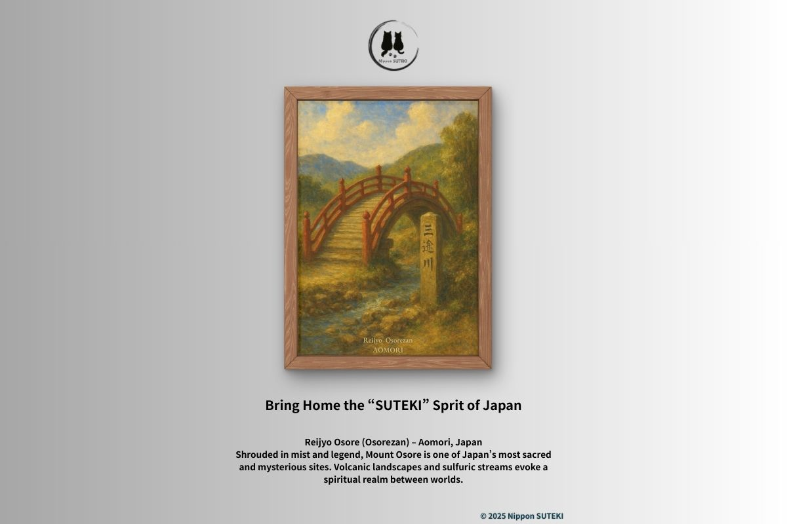
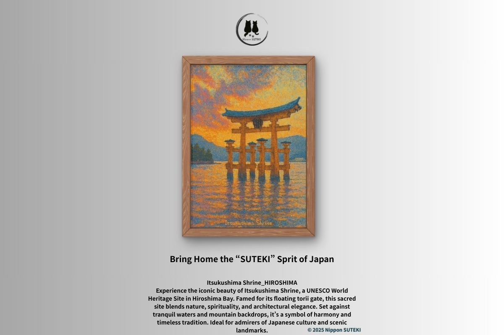
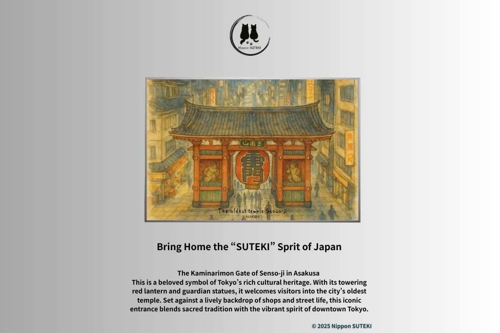
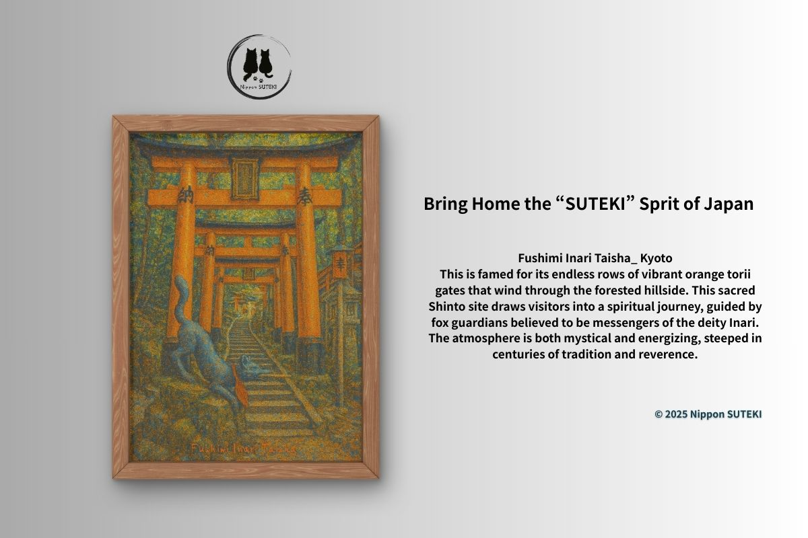
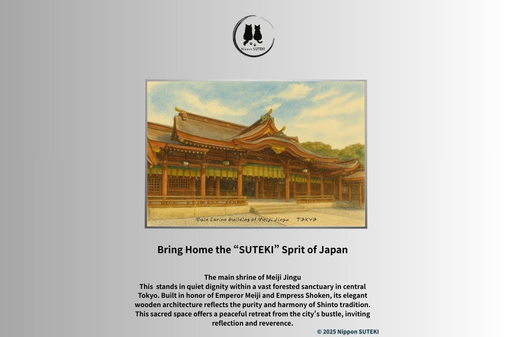

Stories Behind the Art
Small, quiet tales about Japan’s landscapes, shrines, and hidden cultural beauty.

Is the Sanzu River Japan’s “Styx”?
A Walk Between Life and Death — by Sari
Walking Through Japan’s “Land of the Dead”
Exploring Mount Osore — by Kiri

Why Are Japanese Shrines Red?
The Meaning of Vermilion Torii — by Sari
The Floating Sanctuary
Why Itsukushima Shrine Rises Above the Sea — by Kiri

The Crimson Gate of Asakusa
A Quiet Look at Kaminarimon — by Kiri

A Magical Walk Through Red Gates
Inside Kyoto’s Endless Torii — by Sari

A Living Surprise in Tokyo
Quiet Moments at Meiji Shrine — by Sari

Urban Sanctuary
A Hidden Garden in Tokyo — by Kiri

Why I Love Sharing These Stories
Reflections on Art and Everyday Life — by Sari

Finding Peace in Japan’s Silent Landscapes
Moments of Calm — by Kiri